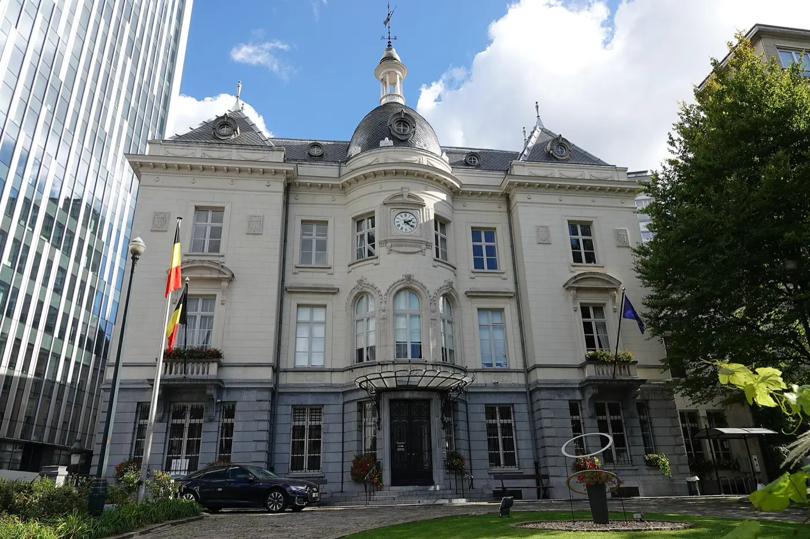
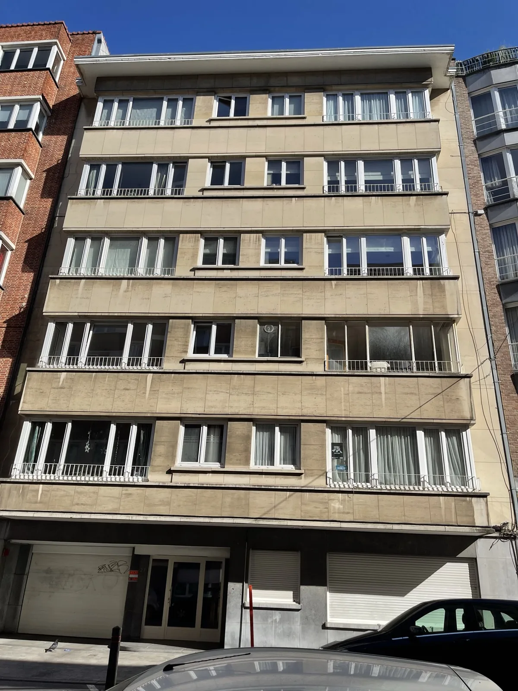
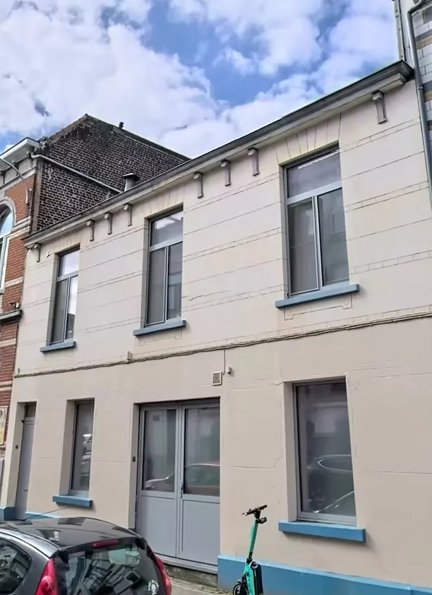

Huis of appartement: een gratis eerste afspraak om de situatie te bekijken, daarna een volledige verkoop voor 2% excl. btw, alles inbegrepen. U betaalt alleen als uw woning verkocht wordt.
Huizen worden zelden verkocht in Sint-Joost-ten-Node: 10 in het eerste semester van 2026, te weinig voor een mediaanprijs van Statbel. Voor een huis steunt de prijsbepaling dus nog meer op vergelijkbare verkopen in de wijk.
Om uw prijs te bepalen vertrekken we van vergelijkbare verkopen in uw straat en wijk, de staat van het huis en het EPB. Het verkoopdossier (EPB, bodemattest, stedenbouwkundige inlichtingen) is klaar voordat de advertentie online gaat.
Mijn huis verkopen →
Appartementen vormen het grootste deel van de markt: 94 verkopen in het eerste semester van 2026, met een mediaanprijs van € 250.000. De helft van die verkopen lag tussen € 170.000 en € 375.000 (Statbel).
Bij mede-eigendom verzamelen we de notulen van de laatste 3 algemene vergaderingen, de afrekeningen van de lasten en het reglement van mede-eigendom. Verhuurd of vrij: de bezoeken worden in overleg met de huurder georganiseerd.
Mijn appartement verkopen →Geen dossierkosten, geen supplement voor foto's of bezoeken. De commissie wordt berekend op de werkelijke verkoopprijs en is alleen verschuldigd als uw woning verkocht wordt.
Indicatief voorbeeld, bedragen exclusief btw.
Bezoek van de woning en vraagprijs op basis van vergelijkbare verkopen.
EPB, bodemattest, stedenbouw, mede-eigendom.
Professionele foto's, Immoweb en portalen.
Over 2 à 3 weekends, met feedback na elk bezoek.
We vergelijken de biedingen, u beslist.
Coördinatie met de notaris, compromis en akte.
In het eerste semester van 2026 lag de mediaanprijs van appartementen in Sint-Joost-ten-Node ongeveer 9% onder de gewestelijke mediaan (Statbel).
Het is vooral een appartementsmarkt: 9 op 10 verkopen. Op een jaar is de mediaanprijs van appartementen gestegen (+15,7%). Enkele wijken: Noordwijk, Klein-Anatolië.
Bron: Statbel, vastgoedprijzen, verkopen in het eerste semester van 2026 vergeleken met het eerste semester van 2025. Mediaan: de helft van de woningen werd duurder verkocht, de andere helft goedkoper.


2% van de verkoopprijs excl. btw, alles inbegrepen, alleen bij verkoop. De eerste afspraak is gratis en vrijblijvend.
U hoeft er geen te zoeken: we brengen u in contact met de onze, notaris Stephan Borremans, die het dossier van compromis tot akte opvolgt om de zaken vlot te laten verlopen. In België wordt een verkoop altijd bij een notaris ondertekend, en u blijft vrij om uw eigen notaris te kiezen.
Ter indicatie: in het eerste semester van 2026 bedroeg de mediaanprijs van een appartement € 250.000 (Statbel); er waren te weinig huisverkopen voor een mediaan. De prijs van uw woning bepalen we samen met u tijdens de eerste afspraak, op basis van vergelijkbare verkopen in de wijk, de staat en het EPB.
Dan betaalt u niets: de commissie van 2% excl. btw is alleen verschuldigd bij verkoop.
De termijn tot het compromis hangt vooral af van de prijs, het dossier en de presentatie van de woning. Tussen het compromis en de akte rekent u op maximaal 4 maanden (notaris.be).
EPB-certificaat, bodemattest, stedenbouwkundige inlichtingen en eigendomstitel; voor een appartement ook de notulen van de laatste 3 algemene vergaderingen, de afrekeningen van de lasten en het reglement van mede-eigendom. We helpen u ze te verzamelen.
Ja. De lopende huurovereenkomst gaat over op de koper, en de bezoeken worden in overleg met de huurder georganiseerd.
Wij werken in het Frans en het Engels. Voor het Nederlands kunnen het kantoor van onze partnernotaris en ons kantoor u tijdens de hele verkoop begeleiden.
Gratis eerste afspraak, vrijblijvend. 2% excl. btw, alles inbegrepen.